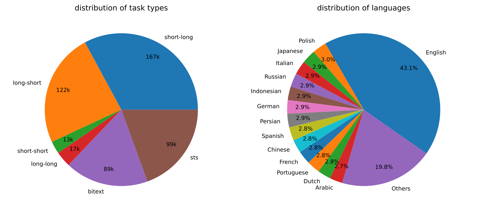
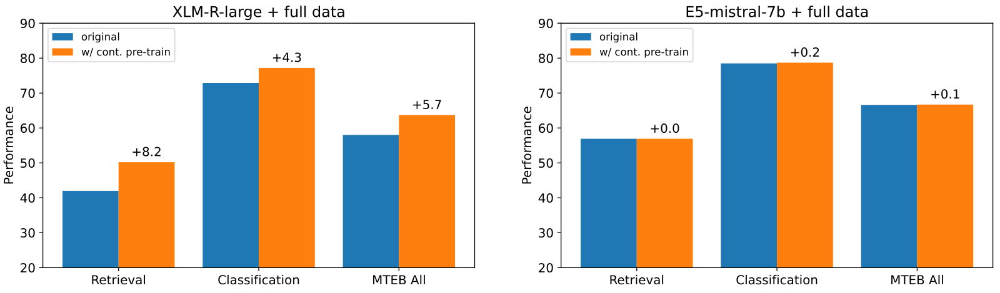
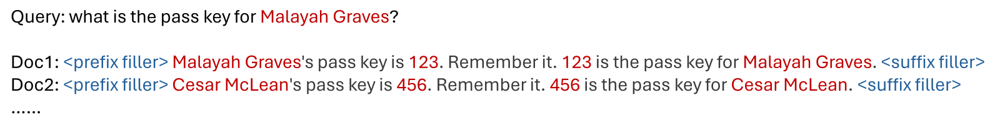
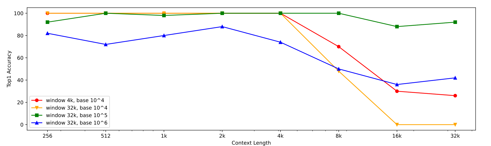

原文: arXiv:2401.00368（ACL 2024） 说明: 本文为论文全文中文技术展开，公式/图表编号与原文一致；图片自 arXiv HTML 抽取，caption 中译；数值原样保留。
预印本信息： arXiv:2401.00368v1 [cs.CL]，2023 年 12 月 31 日。
开源： https://github.com/microsoft/unilm/tree/master/e5
用大语言模型改进文本嵌入（Improving Text Embeddings with Large Language Models）¶
作者： Liang Wang、Nan Yang、Xiaolong Huang、Linjun Yang、Rangan Majumder、Furu Wei
单位： Microsoft Corporation
邮箱： {wangliang, nanya, xiaolhu, yang.linjun, ranganm, fuwei}@microsoft.com
摘要（Abstract）¶
作者提出一种新颖且简单的高质量文本嵌入训练方法——仅用合成数据、少于 1k 训练步。与现有方法通常依赖"数十亿对弱监督文本 → 中间对比预训练 → 少量标注数据微调"的多阶段流水线不同，本文不需要构造复杂的训练管道，也不依赖任务多样性与语言覆盖受限的人工数据集。作者用专有 LLM（GPT-4 / GPT-3.5） 生成覆盖 93 种语言、几十万种文本嵌入任务的多样合成数据；然后用标准对比损失在合成数据上微调开源 decoder-only LLM（Mistral-7B）。
关键结果：即使只用合成数据、无任何标注，方法在 BEIR / MTEB 上就达到有力性能。混合合成数据 + 标注数据后，在 BEIR 与 MTEB 上创下新 SOTA——比之前 SOTA 高 +2%。
1 引言（Introduction）¶
背景：文本嵌入是自然语言的向量表示，编码语义信息，广泛用于 IR、QA、STS、bitext mining、推荐等任务。检索增强生成（RAG）中，嵌入检索是第一阶段召回；生成文本的来源归因（source attribution）也是重要应用。
既有工作局限：
- 现有 SOTA（如 E5 / GTE / BGE）都遵循**"数十亿对弱监督对比预训练 + 少量标注微调"** 的多阶段方案；
- 数据面：弱监督数据集（如 CCPairs / Reddit）任务类型固定（近乎全是"短-长匹配"），语言覆盖极不均衡（英文为主）；
- 模型面：都用 BERT-style encoder，参数只有几亿；对比预训练阶段耗时耗算力。
作者的贡献：
- 纯合成数据 + 少于 1k 步：不做中间对比预训练；
- 两步 prompt 策略：先让 LLM 头脑风暴任务列表，再基于每个任务生成 (query, positive, hard negative) 三元组；
- 93 语言、几十万任务 的合成数据；
- decoder-only LLM (Mistral-7B) 作为 backbone——不用 BERT；
- 发现：LLM 经过万亿 token 的自回归预训练，已经具备强文本表征——对比预训练带来的额外收益 ≈ 0（这在 XLM-R 上有 +8.2，Mistral 上只有 +0.0-0.2）。
主要结果：
- MTEB 平均 66.6，比之前 SOTA +2.4 点；
- BEIR 上超商用嵌入服务（如 OpenAI text-embedding-ada-002、Cohere Embed v3）；
- MIRACL 高资源语言强，低资源仍需改进；
- 上下文扩展：把 RoPE base 从 \(10^4\) 提到 \(10^5\)，可在 32k token 上做 personalized passkey retrieval 保持 >90% Top-1。
2 相关工作（Related Work）¶
文本嵌入的传统路线：从早期加权词袋（Arora et al., 2017）到 InferSent、Universal Sentence Encoder、Sentence-BERT，均用小 encoder + 标注数据微调。
弱监督对比预训练路线：Contriever（Izacard et al., 2021）、OpenAI 商用 embedding（Neelakantan et al., 2022）、E5（Wang et al., 2022b）、GTE（Li et al., 2023）、BGE（Xiao et al., 2023）、Sentence-T5、GTR（Ni et al.）都遵循"CCPairs / Reddit / 网页锚文本"级弱监督 → 微调。
指令类嵌入：INSTRUCTOR（Su et al., 2023）等把每条查询前加自然语言指令，从而共训多任务。
LLM 生成合成数据用于其它下游任务：InPars（Bonifacio et al., 2022）用 LLM 生成 QA 数据；Textbooks are all you need（Gunasekar et al., 2023）用 LLM 生成教材式训练数据；Unnatural Instructions（Honovich et al., 2022）用 LLM 生成指令数据。用 LLM 生成 embedding 训练数据是新方向。
3 方法（Method）¶
3.1 合成数据生成（Synthetic Data Generation）¶
核心思想：把 embedding 任务分类，为每类设计两步 prompt 模板——先让 LLM brainstorm 任务列表，再基于任务生成 (query, positive, hard negative)。
任务分类：
-
非对称任务（Asymmetric Tasks）：query 与 document 语义相关但不是彼此的转述。按长度进一步分四类：
- short-long match：短 query + 长 document（如商用搜索）；
- long-short match：长 query + 短 document（如 QA 反向）；
- short-short match：短 query + 短 document；
- long-long match：长 query + 长 document。 每类都设计两步 prompt（先 brainstorm 任务、再具体生成）。
-
对称任务（Symmetric Tasks）：query 与 document 语义相似但表达形式不同。两种场景：
- 单语 STS：如 "the cat sat" ↔ "a cat is sitting"；
- bitext retrieval：跨语言等价句挖掘。 对称任务的任务定义直接，省略 brainstorm 步骤。
Prompt 模板示例（short-long match，图 1）：

图 1（原文 Figure 1）： short-long 子类的两步 prompt 与生成示例：第一步"brainstorm 一个可能有用的文本检索任务列表"——给几个示例（如"根据股票代码检索公司财报"、"根据书名检索书评/评分/摘要"），要求 LLM 输出 ~20 条 Python 字符串列表，每条对应一个不同的检索任务，不解释、要有创意。第二步"你被指派了一个检索任务：{task}"——要求 LLM 用 JSON 输出 {"user_query": ..., "positive_document": ..., "hard_negative_document": ...}。placeholder {query_type}、{query_length}、{clarity}、{num_words}、{language} 在运行时随机采样，进一步扩充多样性。示例生成结果："user_query = How to use Microsoft Power BI for data analysis；positive = Power BI tutorial；hard_negative = Excel tutorial"。
Placeholder 多样化：
{query_length}从{less than 5 words, 5-10 words, at least 10 words}采样；{query_type}从关键词类、自然语言类等采样；{language}从 XLM-R 支持的 100 种语言列表 采样，高资源语言权重更高。
质量控制：解析 JSON 失败的样本丢弃；exact string match 去重。
3.2 训练（Training）¶
指令模板：给定相关 (query, document) 对 \((q^+, d^+)\)，先把 query 加指令前缀：
其中 {task_definition} 是这个任务的一句话描述。合成数据用第一步 brainstorm 出的任务，其它数据集（如 MS-MARCO）手工写。document 端不加指令——文档 index 可预先构建，任务切换只需换 query 端。
Embedding 提取：给 query 与 document 各追加 [EOS] token，送入 LLM，取最后一层 [EOS] 位向量作为 embedding \(h_{q^+_{\text{inst}}}, h_{d^+}\)。
损失函数（InfoNCE）：
其中 \(\mathcal{N}\) = in-batch negatives + hard negatives 的集合，\(\phi(q, d)\) 是匹配分数：
温度 \(\tau = 0.02\)。
4 实验（Experiments）¶
4.1 合成数据统计¶

图 2 统计：任务类型分布 short-long 167k、long-short 122k、short-short 13k、long-long 17k、bitext 89k、STS 99k；语言分布 English 43.1%、Polish 3.0%、Japanese 2.9%、Italian 2.9%、Russian 2.9%、Indonesian 2.9%、German 2.9%、Persian 2.9%、Spanish 2.8%、Chinese 2.8%、French 2.8%、Portuguese 2.8%、Dutch 2.8%、Arabic 2.7%、Others 19.8%。
规模：500k 样例、150k 独特指令；25% 由 GPT-3.5-Turbo 生成、75% 由 GPT-4 生成；API 消耗 180M token。为 93 种语言中最底部 75 种低资源语言平均生成 ~1k 条。
质量：GPT-3.5-Turbo 输出不严格遵循模板的部分有，但整体质量仍可接受——初步实验显示混入仍有正收益。
4.2 模型微调与评测¶
backbone：Mistral-7B（Jiang et al., 2023）；
指令 + 数据：
- 仅合成："synthetic data only" 无标注；
- 合成 + MS-MARCO：加 MS-MARCO passage ranking；
- full data：合成 + 13 个公开检索/STS/分类数据集（BEIR retrieval subsets、NLI、SNLI 等）。
训练：LoRA 微调（rank = 16）；最多 1k 步；8 张 V100；评测在 MTEB 上要 3 天（大量文档编码）。长度截到 512——虽然模型能支持更长。
4.3 主结果¶
表 1（MTEB 英文子集 56 数据集 平均分）：
| 模型 | Class. | Clust. | PairClass. | Rerank | Retr. | STS | Summ. | Avg |
|---|---|---|---|---|---|---|---|---|
| Glove | 57.3 | 27.7 | 70.9 | 43.3 | 21.6 | 61.9 | 28.9 | 42.0 |
| SimCSE (unsup) | 62.5 | 29.0 | 70.3 | 46.5 | 20.3 | 74.3 | 31.2 | 45.5 |
| SimCSE (sup) | 67.3 | 33.4 | 73.7 | 47.5 | 21.8 | 79.1 | 23.3 | 48.7 |
| Contriever | 66.7 | 41.1 | 82.5 | 53.1 | 41.9 | 76.5 | 30.4 | 56.0 |
| GTR-xxl | 67.4 | 42.4 | 86.1 | 56.7 | 48.5 | 78.4 | 30.6 | 59.0 |
| Sentence-T5-xxl | 73.4 | 43.7 | 85.1 | 56.4 | 42.2 | 82.6 | 30.1 | 59.5 |
| E5-large-v2 | 75.2 | 44.5 | 86.0 | 56.6 | 50.6 | 82.1 | 30.2 | 62.3 |
| GTE-large | 73.3 | 46.8 | 85.0 | 59.1 | 52.2 | 83.4 | 31.7 | 63.1 |
| BGE-large-en-v1.5 | 76.0 | 46.1 | 87.1 | 60.0 | 54.3 | 83.1 | 31.6 | 64.2 |
| E5-mistral-7b + full data | 78.5 | 50.3 | 88.3 | 60.2 | 56.9 | 84.6 | 31.4 | 66.6 |
| w/ synthetic data only | 78.2 | 50.5 | 86.0 | 59.0 | 46.9 | 81.2 | 31.9 | 63.1 |
| w/ synthetic + msmarco | 78.3 | 49.9 | 87.1 | 59.5 | 52.2 | 81.2 | 32.7 | 64.5 |
关键发现：
- "E5-mistral-7b + full data" 平均 66.6，创 SOTA（+2.4 vs BGE-large）；
- 仅合成数据 (63.1) 已经超过 GTR-xxl / Sentence-T5-xxl，逼近 E5-large-v2 / GTE-large——无标注也能达强性能；
- 检索（Retr.）分数从 46.9（纯合成）→ 52.2（+ MS-MARCO）→ 56.9（full data）——标注数据主要提升检索；
- 分类（Class.）78.2/78.3/78.5 → 合成数据已经几乎打满分类能力，标注数据边际收益小。
BEIR 表现（表 3）：E5-mistral-7b 显著超过 OpenAI text-embedding-3、Cohere Embed v3、Voyage 等商用嵌入服务。
4.4 多语言检索¶
MIRACL（Zhang et al., 2023b）nDCG@10（表 2 关键子集）：
| 模型 | 高资源: en | fr | es | ru | 低资源: te | hi | bn | sw |
|---|---|---|---|---|---|---|---|---|
| BM25 | 35.1 | 18.3 | 31.9 | 33.4 | 49.4 | 45.8 | 50.8 | 38.3 |
| mDPR | 39.4 | 43.5 | 47.8 | 40.7 | 35.6 | 38.3 | 44.3 | 29.9 |
| mE5-base | 51.2 | 49.7 | 51.5 | 61.5 | 75.2 | 58.4 | 70.2 | 71.1 |
| mE5-large | 52.9 | 54.5 | 52.9 | 67.4 | 84.6 | 62.0 | 75.9 | 74.9 |
| E5-mistral-7b + full | 57.3 | 55.2 | 52.2 | 67.7 | 73.9 | 52.1 | 70.3 | 68.4 |
发现：
- 高资源语言（en/fr/es/ru）：E5-mistral 领先 mE5-large 平均 +3-4 点；
- 低资源语言（te/hi/bn/sw）：E5-mistral 落后 mE5-large 3-11 点——因 Mistral-7B 预训练几乎不含这些语言。
Bitext mining（表 4）：BUCC 2018 (4 langs)、Tatoeba (112 langs) 上 E5-mistral 高资源上略优，Tatoeba 全球均分不敌 LaBSE（专门为跨语言训练的）。
4.5 消融实验（表 5）¶
| 变体 | Class. | Clust. | PairClass. | Rerank | Retr. | STS | Summ. | Avg | ΔAvg |
|---|---|---|---|---|---|---|---|---|---|
| E5-mistral-7b (default) | 78.3 | 49.9 | 87.1 | 59.5 | 52.2 | 81.2 | 32.7 | 64.5 | – |
| w/ LLaMA-2 7b init. | 76.2 | 48.1 | 85.1 | 58.9 | 49.6 | 81.2 | 30.8 | 62.9 | -1.6 |
| w/ msmarco data only | 71.6 | 47.1 | 86.1 | 58.8 | 54.4 | 79.5 | 31.7 | 62.7 | -1.8 |
| pooling type | |||||||||
| w/ mean pool | 77.0 | 48.9 | 86.1 | 59.2 | 52.4 | 81.4 | 30.8 | 64.1 | -0.4 |
| w/ weighted mean | 77.0 | 49.0 | 86.1 | 59.2 | 52.0 | 81.4 | 30.2 | 64.0 | -0.5 |
| LoRA rank | |||||||||
| w/ r=8 | 78.4 | 50.3 | 87.1 | 59.3 | 53.0 | 81.0 | 31.7 | 64.8 | +0.3 |
| w/ r=32 | 78.4 | 50.3 | 87.4 | 59.5 | 52.2 | 81.2 | 30.6 | 64.6 | +0.1 |
| instruction type | |||||||||
| w/o instruction | 72.3 | 47.1 | 82.6 | 56.3 | 48.2 | 76.7 | 30.7 | 60.3 | -4.2 |
| w/ task type prefix | 71.1 | 46.5 | 79.7 | 54.0 | 52.7 | 73.8 | 30.0 | 60.3 | -4.2 |
关键发现：
- Mistral > LLaMA-2 初始化 +1.6 点（Mistral 预训练更好）；
- 仅 MS-MARCO 训练 -1.8 点——合成数据对分类/STS/Rerank/Clust. 帮助大；
- pooling 类型影响小（-0.4 / -0.5）——last-token 略优于 mean pool；
- LoRA rank 8/16/32 差异 <0.3——rank 16 已足够；
- 指令类型影响最大：无指令 / 只有 task type prefix 都掉 4.2 点——自然语言 instruction 是关键。
5.1 是否需要对比预训练？¶

图 3：对比预训练对 XLM-R-large 与 E5-mistral-7b 的影响：
- XLM-R-large：检索 +8.2、分类 +4.3、MTEB +5.7 —— 对比预训练关键；
- E5-mistral-7b：检索 +0.0、分类 +0.2、MTEB +0.1 —— 几乎无收益。
结论：万亿 token 自回归预训练已把 LLM 训成了"隐式的文本表征模型"，只需最小微调就能变成 embedding 模型——对比预训练阶段对 LLM 是冗余的。
5.2 长文本嵌入（长文扩展）¶

作者提出 personalized passkey retrieval 合成任务（图 4）：
- 一批文档，每篇由重复填充文本（"The grass is green. The sky is blue..."）+ 一个人名 + 一个 6 位随机 passkey 组成，passkey 位置随机；
- Query = "what is the pass key for {person name}?"；
- 从 100 个候选文档中检索包含该人名 passkey 的文档；
- 变化上下文长度：256, 512, 1k, 2k, 4k, 8k, 16k, 32k。

图 5 结果：
- 默认 sliding window 4k + RoPE base \(10^4\)：4k 内 100%，8k 以上快速降到 0；
- 窗口扩到 32k + base \(10^4\)：直接更差；
- 窗口扩到 32k + base \(10^5\)：32k 内保持 >90% 准确率——但短文本上略有回退；
- 窗口扩到 32k + base \(10^6\)：短文本进一步回退。
结论：只需改 RoPE rotation base（\(10^4 \to 10^5\)），无需任何长文微调，E5-mistral 就可覆盖 32k 上下文——因为 Mistral 本身是 32k sliding window 预训练的。
6 结论（Conclusion）¶
作者展示了**"仅合成数据 + 少于 1k 步"** 可以训练出 SOTA 级文本嵌入模型：
- 两步 prompt 生成 500k 覆盖 93 语言、几十万任务的多样合成数据；
- decoder-only LLM (Mistral-7B) + LoRA + last-token pooling + 自然语言 instruction 是关键；
- 对比预训练在 LLM 上冗余——直接微调即可；
- 合成 + 标注混合下 MTEB 66.6 / BEIR SOTA；
- 通过改 RoPE base 就能扩到 32k 上下文。
未来方向：改进多语（尤其低资源）；用开源 LLM 生成合成数据。
局限：
- 推理成本大（7B vs BERT-base 100M）；
- 嵌入维度 4096 存储成本高（未来可考虑 Matryoshka 表征学习 [Kusupati et al., 2022] 降维）；
- 依赖手工 prompt engineering；
- 低资源语言仍需改进。
附录索引（Appendix）¶
- 表 6 MIRACL 全 16 语言完整结果；
- 表 7 对比预训练详细数值；
- 表 16 合成数据样例；
- 表 17 MTEB 56 数据集逐个分数；
- 表 18-19 训练超参与实现细节。
翻译约定：合成数据（synthetic data）、指令（instruction）、非对称任务（asymmetric tasks）、对称任务（symmetric tasks）、短-长匹配（short-long match）、双语文本挖掘（bitext mining）、语义相似度（STS）、in-batch negatives、hard negatives、last-token pooling、mean pool、LoRA、RoPE rotation base、personalized passkey retrieval、检索增强生成（Retrieval-Augmented Generation / RAG）。Mistral / LLaMA / XLM-R / GPT-4 / GPT-3.5-Turbo / BEIR / MTEB / MIRACL / MS-MARCO / BUCC / Tatoeba / Contriever / SimCSE / GTR / Sentence-T5 / E5 / GTE / BGE / mE5 / mDPR / BM25 / LaBSE / Cohere / Matryoshka / RoPE / InfoNCE 按惯例不译。